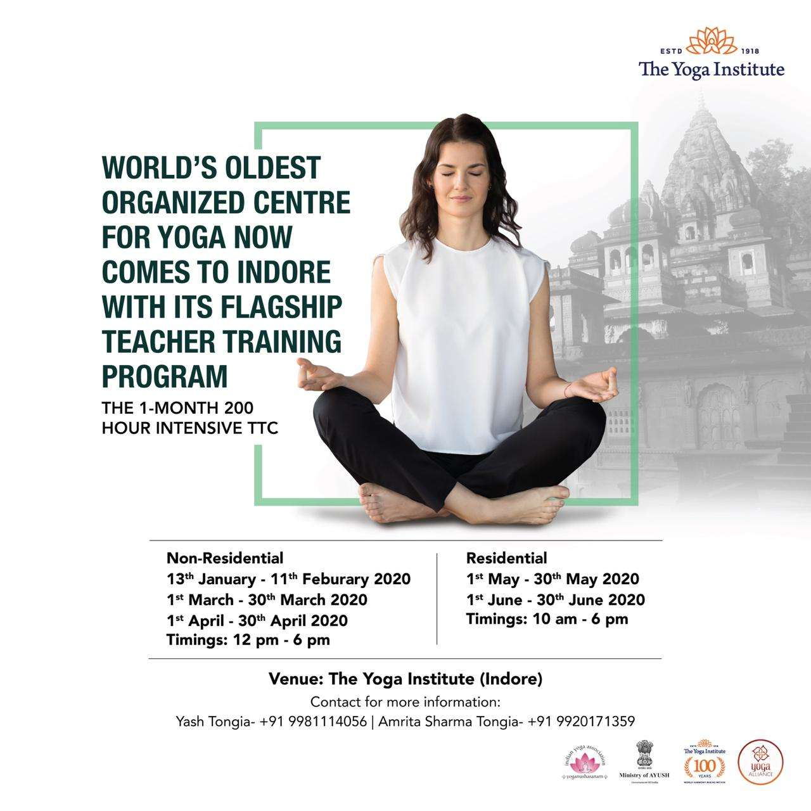

INDORE

The Yoga Institute, Indore a place of holistic wellness in the Financial Capital
of Madhya Pradesh, shall function under the guidance of The Yoga Institute Mumbai,the world’s
oldest organised Yoga Centre. Founded by Shri Yogendraji,father of the modern
Yoga Renaissance, The Yoga Institute is world renowned in spreading authentic yoga practice and
preserving our country’s rich ancient heritage, having its branches around the globe.
Yoga is a Physical, Mental and Spiritual practice. It is a holistic approach to a healthy way of life.
The regular practice of asanas, and breathing exercises (pranayama), makes the body strong, supple and healthy.
It has a profound effect on the circulation and on the functioning
of the inner organs, glands and nerves, keeping all systems in radiant health and leading to
greater energy,better concentration, and a happier, more fulfilling life.
At The Yoga Institute, Indore we learn to manage many Lifestyle disease like Blood pressure,arthritis,
spondylitis, asthma, bronchitis, diabetes, migraine, thyroid, menstrual disorder,
acidity, insomnia, joint pain, muscular pain and many more effectively through the regular practice of yoga,
and it is never too late or too early in life to take it up.
Anyone can practice yoga.
Programs Offered:
1.5 & 3 Month Yoga Teacher’s Training Course.
1.5 Months (Tue-Fri) & 3 Months (Sat & Sun).
Timing : 10:30 a.m. – 4:30 p.m.
Day: Monday to Saturday
1.Morning Timings: 6:30 am to 8:00 am (IST)
2.Evening Timings: 6:45 pm to 8:30 pm (IST)
For further details contact: +91-982042902
Programme:
Special Regular Classes
Content:
Special classes are an ideal way of Yoga education for daily practice.
The classes cover Asanas, Pranayamas, Kriyas, Diet and Yogic lifestyle recommendations.
Further, based on participant health conditions separate guidance is given.
Duration:
Classes are of 1 hour duration.
A minimum attendance of 3 months is recommended, to experience the difference in your life.
Participant can join on any day of the month.
The Yoga Institute, Juhu Centre 1 Ground Floor Backside, Abhijat Bunglow, Plot No. 48, NS Road Number 7, Opp. Siddhivinayak Building, JVPD Scheme, Juhu.
YOGA CLASSES
1.Monday/Wednesday/Friday
Timings – Morning – 6:30 am to 7:30 am, 7:30 am to 8:30 am
Afternoon – 11:00 am to 12:00 noon,2:30 pm to 3:30 pm (only for ladies)
Evening – 6:30 pm
Program Details:
Dates::
Non-Residential Course
- 13th January – 11th February 2020
- 1st March – 30th March 2020
- 1st April – 30th April 2020
- Timings: 12:00 pm – 6:00 pm AND Sundays off
Address:The Yoga Institute (Indore)
1st floor, Plot No. 3, Akshay Deep Colony MR 9, Near Lotus A.B. Road, Indore (M.P.) – 452010.
Yash Tongia- 9981114056
Amrita Sharma Tongia- 9920171359